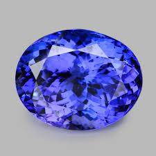

Tanzanite
Système cristalin : orthorhombique
Indice de réfraction : 1,688 à 1,705
Birèfringence : biaxe +0,009
Densité : 3,35
Dureté : 6
Couleur : violet bleu
Particularité : trichroisme intense
Image :
